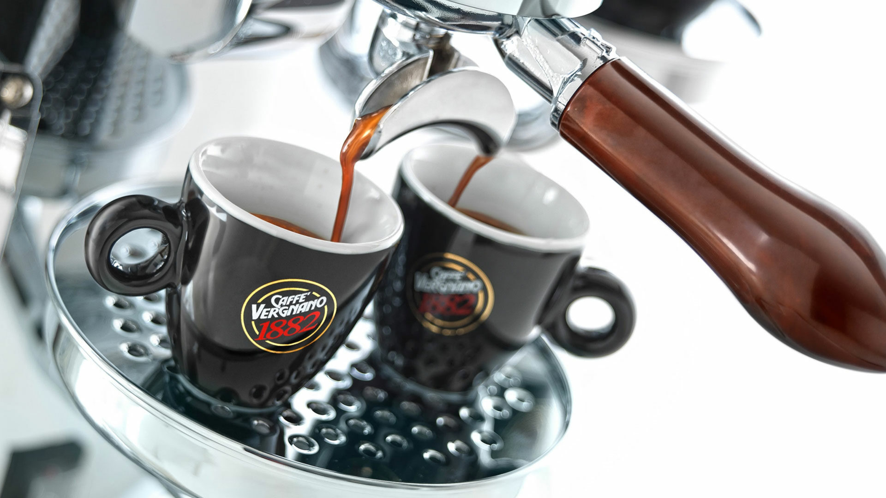

Le caffé Vergnano est un café artisanale avec un temps de torréfaction lent (18 à 22 minutes). Les grains sont grillés séparément par origine, afin d’obtenir le degré de cuisson optimal, pour chaque cru. Et ainsi les meilleurs arômes ! Chaque tasse est une symphonie de saveurs soigneusement cultivées et torréfiées à la perfection. Notre quête de la qualité commence dans les plantations, où seules les meilleures variétés de café sont sélectionnées Tout est fait pour que le café garde ses vertus, sa qualité, et son goût unique. Classé dans le top 5 sur plus de 1000 torréfacteur en Italie. Un café tres respectueux des norme de l’environement ( capsules biodegradable packaging recyclable etc..) pour plus d’info nous vous invitons à visiter notre site web : Caffevergnano.com